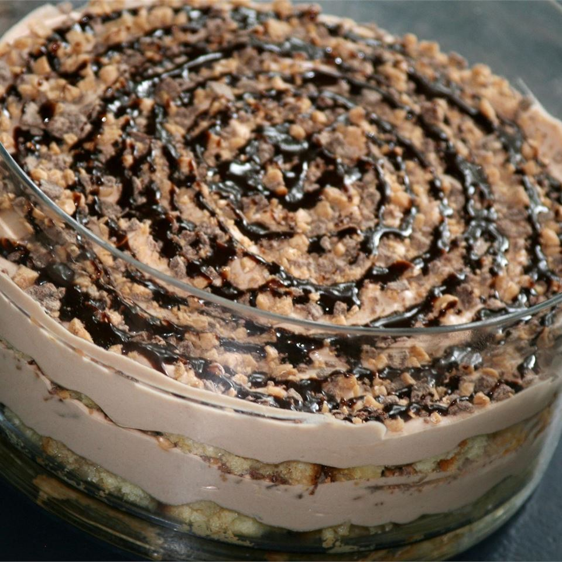

Tiramisu Toffee Dessert

This is a nice version of the popular Italian
pick-me-up dessert. The toffee candy in this recipe adds a
delightful crunchiness to the smooth creamy
whipped cream quality of an already perfect dessert.
Ingredients
- 1 (10.75 ounce) package frozen prepared pound cake,
thawed and cut into 9 slices
- ¾ cup strong brewed coffee
- 1 (8 ounce) package cream cheese
- 1 cup white sugar
- ½ cup chocolate syrup
- 2 cups heavy whipping cream
- 2 (1.4 ounce) bars chocolate covered English toffee, chopped